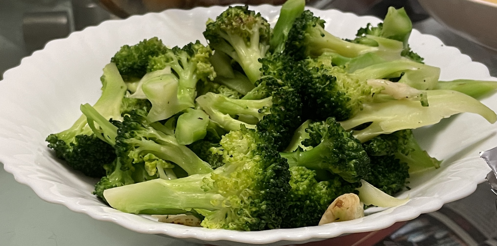

Broccoli

Description
Green and a good vegetable.
Ingredients
Steps
- Heat wok
- Add oil
- Add garlic
- Add broccoli
- Stir them around for a bit and make them dance
- Add salt and stir more
- Add water and cover with lid
- Let them simmer for like 2 minutes
- Serve!
- Realize that they were still not fully cooked .-.
- Put them back in the wok
- They're burnt now :(
- Eat and hope you don't die